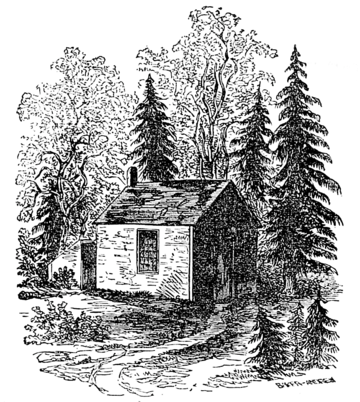

Walden
Walden is a book by transcendentalist Henry David Thoreau. The text is a reflection upon simple living in natural surroundings.
Author: Henry David Thoreau
Original title: Walden; or, Life in the Woods
Country: United States
Genre: Memoir
Published: August 9, 1854
Media type: Print
The work is part personal declaration of independence, social experiment, voyage of spiritual discovery, satire, and—to some degree—a manual for self-reliance.